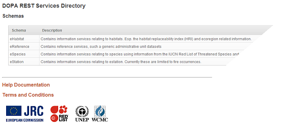
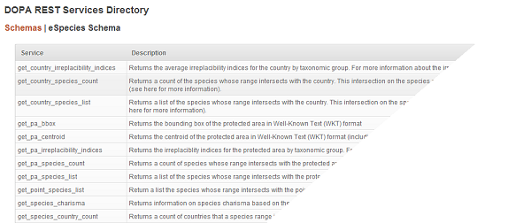
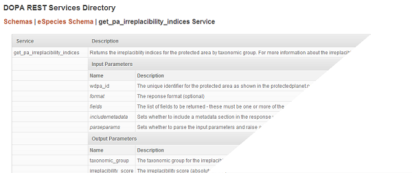

This document contains help documentation for the Digital Observatory of Protected Areas (DOPA) REST Services Directory. The REST Services Directory is a catalog of information services available through the DOPA initiative that can be used within information systems such as websites and client applications. The services provide a wide range of information about protected areas from species and habitat information to land cover and fire information. For more information about the DOPA initiative see here.
The purpose of the information services is to provide access to the indicators, analyses and other research products that the Joint Research Centre have developed in a number of related projects. These products have been derived from a range of data providers and partners and full metadata information about all of these datasets and the analytical methodologies is available here. <TODO: Link to metadata>
This help document provides information for both providers and consumers of the REST Services. For details on how to publish your data through REST services, see here. For details on how to access and use the services see the following section.
There are many ways in which the REST Services can be consumed and used from applications, websites and tools etc. REST, short for Representational State Transfer, provides a simple, open Web interface to services hosted by the Joint Research Centre. All services exposed by the REST Services Directory are accessible through a hierarchy of endpoints or Uniform Resource Locators (URLs) for each service published at JRC. When using the REST Services, you typically start a the root level showing all of the schemas available within the DOPA REST Services:
The next level down in the Services Directory is the schema level which shows you the names of all of the information services within that particular schema:
The final level in the REST Services hierarchy is the service level which includes detailed information on each individual service in the directory. This page includes a description of the service, the input and output parameters and some example calls. The url for the service page is the endpoint for the service and this is the address that you will use to consume the service. In order to consume the service you will also need to pass in a number of parameters which are described in the next section.
REST requests can be creating using the information on the service page. The list of parameters for the service includes the input parameters that you must pass to the service and the output parameters that are returned from the server (if specified in the fields parameter). For the input parameters, a service can have mandatory parameters and optional parameters (the service name is in italics for optional parameters). For each of the parameters the following information is given:
| Name | The name of the service (optional parameters are shown in italics) |
| Description | A full description of the service |
| Type | The data type of the parameter. This value can be one of the following: integer, array or string. For more information see parameter types. |
| Default | (input only) If a parameter is optional then a default value will be specified in this column. Default values are values that will be included in the REST request if not explicitly specified. |
All services contain parameters with specific data types which must be complied with in order to use the services succesfully. The following data types are supported:
| Data type | Represents | Encoding |
|---|---|---|
| Integer | Positive 4 byte integer value | None |
| String | Variable length characer data | None |
| Array | Variable length array of strings or integers | Using commas to separate the items: 1,2,3 or CR,NT |
| Date | Date only | Encoded as a string using a mm/dd/yyyy date format: 03/31/2012 |
For example, the following REST Service call includes two parameters (one a mandatory integer and one an optional array of numbers) and returns a list of species for a particular protected area:
For each REST service there are a number of standard optional parameters that can be specified in the REST service call.
| Name | Description | Default |
|---|---|---|
| format | The reponse format | json |
| fields | The list of fields to be returned | all fields |
| includemetadata | Sets whether to include a metadata section in the response which includes summary information about the results | true |
| parseparams | Sets whether to validate the input parameters | true |
The format parameter is used to specify the response format - see the Response section for more information. If an invalid value is used then an 'Invalid response format' error is returned. The default value is json.
The fields parameter is used to determine the fields that are returned and is encoded as an array - these must be one or more of the output parameters listed below. If an invalid field is requested then an 'Invalid output fields' error is returned. The default value is to return all fields
The includemetadata parameter sets whether to include a metadata section in the response which includes summary information about the results. See the metadata section for more information. The default value is true.
The parseparams parameter sets whether to parse the input parameters in the service call. If true then input parameter names are validated against the database and invalid parameters will raise errors. The default value is true. If false then parameters with invalid names will be ignored by the server.
For example, the following REST Service call includes values for all optional parameters :
Parameter values for the REST Service calls can be done by simply appending the parameter values to the end of the service end point as a set of key/value pairs preceeded by a question mark. There are example calls in each of the service pages that show the syntax for calling a particular service (both using mandatory and optional parameters). All mandatory parameter values must be specified, and all data types must be adhered to otherwise the service call will fail. Parameters can be specified in any order (both mandatory and optional) and any parameters whose names do not match those of the input/output parameters will be ignored. If mandatory parameters are missing or values are invalid then the server will return an error.
The REST response from the server will include all of the data and also an optional metadata section (specified by the includemetadata parameter). The sample below shows a typical json response:
The format parameter in the REST service call determines the format of the returned information and can be one of three values: json, array or xml. The array format is the same as the json format except that the field names are not repeated for each record thus keeping the size of the return data to a minimum. The field names can be retrieved using the metadata section of the response. The xml format does not include a metadata section.
The records section of the response includes all of the data requested by the REST service call as an array of rows. Each row contains the information requested in the fields parameter, or all fields if the fields parameter is not specified. All data will be encoded using the standard encoding for that format.
At the end of the records section there is an optional metadata section (this section will only be present if the includemetadata parameter is true). The metadata section includes information about the actual REST service request and includes a fields section which describes all the returned fields and their data types together with a number of other parameters:
| Name | Description |
|---|---|
| success | SELECT if the service is a simple select statement |
| records | The total number of records returned within the records section |
| duration | The duration of the query on the database server (NOTE: this is not the duration of the web response which may be considerably longer due to network issues) |
| idProperty | The name of the field to use as the unique identifier for the returned data. This field can be used in data aware controls. |
| root | The name of the root element or container in the response. |
The metadata section can be used by developers for working with the schema of the response.
REST services can be accessed and used in websites using Javascript by using native Javascript HTTP GET methods or by using Javascript Frameworks, like jQuery or Dojo. The following simple example HTML page shows you how to request a list of species for a protected area and show the number of species found together with a list. The following example uses Dojo and the code can be copy and pasted into JSBin:
The REST services can also be used in desktop applications, such as Microsoft Office, by using the service endpoint. For many desktop applications the format parameter should specified as xml.
The following walkthrough shows you how to use the REST services in Microsoft Excel 2010 by retrieving a list of species for a protected area:
The DOPA REST Services Directory makes available in HTML format, functions from a Postgresql database. It supports the following features to expose your data as a REST service:
To take advantage of these features you simply need to create a function in Postgresql with a description. Optionally you can add additional information to the funtion such as parameter descriptions.
In Postgresql create a function to retrieve data within a schema which starts with an 'e' (optionally with a number of input parameters). The name of the function will determine its visiblity within the REST Services Directory. Currently only functions that begin with 'get' are shown in the REST Services Directory. In addition, if a function begins with an underscore it will only be shown internally and not on the publically visible REST Services Directory. This can be useful for debugging/testing purposes. In addition, the function must be accessible using the appuser account.
If you want to return simple scalar data then define the output as a simple data type. For example:
To return data with a specific schema, define a TABLE return data type (see here for more information). For example:
If you want your service to be accessible using data-aware controls you will need to supply a unique identifier with your response. By default the idProperty in the Response metadata lists the first field that is returned as the id field. So in this case you will need to ensure that the id field is returned first.
If you want to include default parameters in your REST service then you need to implement them in your function. For example:
NOTE: There is a bug in pgAdmin that prevents you from recreating a function with a default value of ARRAY[1,2,3]. You will need to edit the CREATE script that is generated by pgAdmin to correctly create a function with a default value of an ARRAY.
By default if a function is not commented then it will not be shown in the Services Directory. Create comments for functions using the usual COMMENT statement. For example:
There is currently no mechanism to provide comments or descriptions for function parameters in Postgresql so a workaround has had to be developed which involves writing the comments for the function parameters in the comment for the function. The syntax for doing this is:
Parameter descriptions are given inside braces {} and each parameter description is separated using a dollar sign $. These descriptions are optional and if they are not given then 'No Description' appears alongside the parameter in the REST Services Directory. Parameter descriptions can also include HTML markup and so, for example, you can include links in your descriptions for functions or function parameters. However, all apostrophes will need to be escaped using the Postgresql escaping of a single quote. So for example, the following comment includes full escaping to include hyperlinks in the COMMENT for a function:
If only some parameters have a description available then all of the rest of the parameters will appear with 'No Description' beside the parameter name in the Services Directory.
When publishing services into the REST Services Directory, particular care must be taken to abide by any license or copyright restrictions, particularly where data has been derived directly from an external partner. Currently JRC are not licensed to redeliver any spatial data from external partners including IUCN and UNEP-WCMC.
For comments/amendments please email: andrew.cottam@jrc.ec.europa.eu